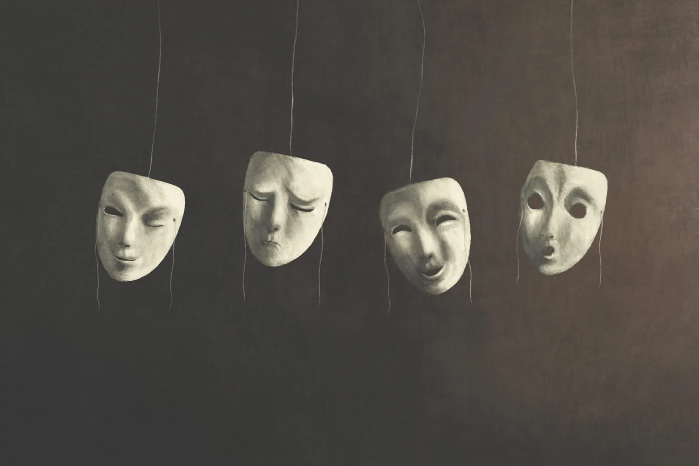

Narcissistic families are a hidden world of dysfunction that leaves deep emotional scars on their members. In these families, one of the most common and damaging dynamics is the presence of a "golden child." The golden child is often the favourite of the narcissistic parent, receiving excessive praise and attention while their siblings are marginalized or even scapegoated. This blog explores the dynamics of narcissistic families and the role of the golden child, shedding light on the emotional impact it has on all involved.
The Narcissistic Family
Narcissistic families are characterized by a self-absorbed, manipulative, and emotionally abusive parent who places their needs, desires, and image above everything else, including their children. These parents lack empathy and often exploit their children for their own benefit. Within these families, there is a clear hierarchy, with the narcissistic parent at the top, followed by the golden child, and often, a scapegoat or ignored child.
The Golden Child
The golden child is the favoured child of the narcissistic parent. They are showered with attention, affection, and praise. Everything they do is celebrated, and they are often held up as the family's shining star. In contrast to their siblings, who may be subjected to constant criticism and blame, the golden child seems to lead a charmed life within the family.
The Role of the Golden Child
- Narcissistic Supply: The golden child is a valuable source of narcissistic supply for the parent. Their success and adoration reflect positively on the parent, boosting their ego and public image. The golden child is often manipulated into becoming an extension of the narcissistic parent, living out the parent's unfulfilled dreams and desires.
- Sibling Rivalry: The preferential treatment of the golden child can lead to intense sibling rivalry and jealousy. Siblings often feel neglected, unloved, and rejected in comparison to the golden child. This rivalry can be a central source of tension within the family and the narcissistic parent uses the jealousy to full effect. Competing is the name of the game and children learn that life is about being in competition for limited resources like affection/love etc.
- Emotional Consequences: Being the golden child may sound like a privileged position, but it comes with its own set of emotional burdens. These children are often denied the opportunity to develop a healthy sense of self and autonomy. They may carry the heavy weight of their parent's expectations, experiencing anxiety, perfectionism, and a fear of disappointing their narcissistic parent. They may also be ill equipped to fulfil the expectations and struggle to know a realistic assessment of their abilities from a grandiose one.
Impact on Siblings
The presence of a golden child in a narcissistic family can have profound and long-lasting effects on their siblings:
- Low Self-Esteem: Siblings who are not the golden child often develop low self-esteem as a result of the constant comparison and criticism they endure. They may believe they are inherently unworthy or unlovable.
- Role Reversal: Some siblings may adopt the role of the caretaker or scapegoat in response to the family's dysfunction, seeking to gain approval and love from the narcissistic parent in their own way.
- Emotional Scarring: Siblings who do not receive the same attention and praise as the golden child can carry emotional wounds into adulthood, leading to issues such as depression, anxiety, and difficulty forming healthy relationships.
Breaking the Cycle
Recognizing and addressing the dynamics of a narcissistic family, especially the role of the golden child, is crucial for healing and breaking the cycle of dysfunction. Here are some steps to consider:
- Seek Therapy: Individual therapy like the Mind Map System can help you to cope with the emotional scars left by a narcissistic family. It provides a safe space to explore and process the experiences and emotions related to the golden child dynamic. However, and this should be emphasised, choose your therapist with care because if they have no understanding of the subtle dynamics at play, it can lead to further doubt and confusion- like being gaslit all over again.
- Establish Boundaries: Setting healthy boundaries is essential when dealing with narcissistic family members. It is necessary to protect oneself from emotional manipulation and abuse. Keep contact short or not at all, depending on what you find is appropriate/necessary for your own peace. Your time is supply don't forget and the narcissistic parent will demand it from you as a kind of entitlement.
- Support Systems: Building a strong support network outside of the family is essential. Friends, mentors, or support groups can provide emotional validation and guidance. Becoming discerning about friends is important too. Be sure to check in with how you feel around people and who may not be for your growth but rather your demise.
- Self-Discovery: Explore your own identity and interests. Discover who you are apart from the roles assigned within the family. Building self-esteem and a sense of self-worth can be a transformative journey. This includes exploring where your heart and skills truly are! They may be different to the ideals of the narcissistic parent. Where they overlap, it will be important to take back ownership of these skills by using them in a way that expresses you, not them.
Narcissistic families are marked by a toxic mix of manipulation, emotional abuse, jealousy and favouritism. The golden child dynamic is just one facet of this dysfunction, but it leaves profound emotional scars on all involved, especially the child whose role it is. Sometimes these children go on to become like their narcissistic parent and so the cycle continues through the generations. Understanding the dynamics at play within these families is the first step toward healing and breaking free from their damaging influence. By seeking tailormade therapy like at the Psychological Healing Centre, establishing boundaries, building friendships with trustworthy others, and embarking on a journey of self-discovery, individuals can gradually reclaim their authentic lives back and move towards healthier, more fulfilling and life giving relationships.
References
- Bowlby, J. (1988) A Secure Base: Parent-Child Attachment and Healthy Human Development, New York, Basic Books. Bretherton, I.
- Kernberg, O.F. (2004) Borderline conditions and pathological narcissism. Lanham, MD: Rowman & Littlefield.
- Rosenberg, J. (2015) Be the cause: Healing human disconnect. United States: CreateSpace Independent Publishing Platform.